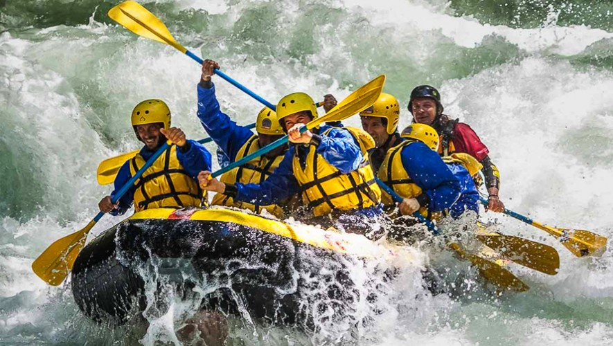

El descenso de ríos o balsismo, conocido mundialmente como rafting, es una actividad deportiva y recreativa que consiste en recorrer el río en la dirección de la corriente (río abajo), por lo general sobre algún tipo de embarcación o balsa. Por lo común los ríos que se navegan tienen algún grado de turbulencia, estos también son llamados ríos «de aguas blancas» debido a que este color es característico de la espuma que genera la turbulencia en los cuerpos de agua. Otra denominación común para este tipo de ríos es simplemente «rápidos». Las embarcaciones más comunes que se utilizan son la balsa, la canoa o el kayak, que puede ser rígido o inflable.
Los rápidos
En el descenso de ríos existe una clasificación internacional ampliamente aceptada para clasificar los ríos según su grado de dificultad al navegarlos.
Aguas planas. Se refiere a cuerpos de agua cuya superficie es prácticamente plana, sus remolinos, huecos y olas son despreciables.
Clase I. Muy fácil. Aguas casi planas, muy poco turbulentas con olas pequeñas. Totalmente navegable.
Clase II. Fácil. Aguas un poco turbulentas con huecos y hoyos de no más de 25 centímetros, remolinos pequeños sin peligro alguno para un nadador.
A partir de aquí se consideran ríos rápidos, de aguas blancas o de aguas bravas.
Clase III. Intermedio. Aguas turbulentas con huecos y olas medianas de no más de un metro, remolinos de cuidado para un nadador y de alguna consideración para una embarcación. La navegación requiere buena técnica y conocimiento del río. Existen algunos pasos técnicos de atención.
Clase IV. Difícil. Aguas blancas muy turbulentas pero predecibles. Huecos y olas de hasta dos metros, remolinos considerables para una embarcación. Pueden existir cascadas de consideración. La navegación requiere muy buena técnica y conocimiento del río. Existen pasos estrechos que requieren maniobras técnicas complicadas.
Clase V. Experto. Aguas blancas muy turbulentas poco predecibles con olas y huecos de más de dos metros. Remolinos y cascadas de peligro. Requiere un grado de técnica experto y muy buen conocimiento del río. Necesidad de maniobras extremadamente técnicas.
Clase VI. Extremadamente difícil o no navegable. Se considera muy difícil o imposible de navegar, considerándose infranqueable debido a la existencia de riesgo de muerte.
Todo río rápido no tiene una misma clase en toda su extensión, sino que posee una sucesión de tramos de distintas clases. Un río o un tramo del mismo se considera de la misma clase que su rápido más difícil. La mayor parte de la actividad en descenso de ríos se realiza en las clases III y IV, quedando las clases II e inferiores en la categoría de navegación general en la que otras embarcaciones, técnicas y equipos son utilizados. Los ríos de clase V son abordados únicamente por expertos, y los ríos de clase VI son infranqueables.
HIDROLOGÍA
Los ríos de aguas turbulentas o ríos rápidos tienen características peculiares que todo buen practicante del descenso de ríos debe conocer. Los más conocidos son: eddy, hoyo feliz, hoyo triste, hoyo en "Vy" y hoyo en "Vy" invertida.
SEGURIDAD Y EQUIPO
Por la naturaleza de la actividad se requiere un estricto apego a la técnica, al equipo y a la seguridad. El adecuado uso del equipo y el conocimiento de las técnicas básicas de remado y rescate es indispensable aun cuando se va con un guía experto o con una compañía de descenso de ríos.
LLEVA TU EQUIPO DE SEGURIDAD
Un tercio de todos los accidentes fatales ocurren porque la víctima no llevaba su chaleco salvavidas o el chaleco no estaba bien puesto en el cuerpo. Un casco es otro equipo imprescindible. Sin un casco, puedes tropezar fácilmente su cabeza contra una roca cuando la balsa te catapulta fuera. Unos zapatos protegen tus pies del fondo rocoso, zapatos del neopreno te protegen del frío. Si pierdes el grupo y no dispones de un silbato, será mucho más difícil localizarte. Siempre debes llevar un chaleco salvavidas, un casco, zapatos y un silbato. El participante deberá utilizar todos los elementos de seguridad.
NO AL CONSUMO DE DROGAS Y ALCOHOL
Nunca debes consumir drogas o alcohol mientras practicas el rafting. Las drogas atontan. Adormecen reflejos y reacciones, cambian el juicio. Algunos podrían argumentar, que el alcohol te da más coraje, pero la valentía no es un buen sustituto del pensamiento sano y una mente clara. Espera hasta que estés fuera del río para celebrar, entonces tienes realmente un motivo para celebrar.
CONOZCA BIEN EL RÍO
Cada río tiene sus cosas específicas, sus peligros y riesgos que debemos evitar. Planifica bien cada tramo del río y todos los riesgos potenciales. Estudia bien los mapas del río, busca por internet, pregunta a los locales para determinar todos los obstáculos del río. Es recomendable explorar a pie las siguientes secciones de rápidos si no estamos seguros como navegar la balsa en los rápidos. Por último, conoce bien el grupo y las experiencias de los miembros y no subestime el río.
SE CONSCIENTE DEL TIEMPO
El tiempo y las condiciones meteorológicas son muy importantes y afectan mucho la cosa. Si ha llovido mucho o la nieve se está derritiendo rápidamente, esto afecta mucho el caudal del río, respectivamente la dificultad y el carácter del río. El río es más rápido, los rápidos se hacen más grandes y las piedras y el barro puede provocar varios obstáculos. Al otro lado, si la temporada era muy seca, el caudal es mínimo, con muchas piedras y mucha roca que sale del fondo.
El rafting en el tiempo frío o en agua fría necesita una atención especial. Unos trajes de neopreno son necesarios, botas especiales, guantes… Especialmente durante los meses de primavera los ríos son bastante fríos, porque el agua viene de montaña, de la nieve derretida. En este caso, en cada momento estás muy cerca de hipotermia. Así que para mantener la seguridad, presta atención a la fuente del agua.
POSTURA CON PIES ADELANTE
En caso de caída, hay que seguir un sencillo procedimiento para realizar un auto-rescate o facilitar el rescate por parte de terceros que quedaran en el bote. Hay que adoptar una postura que evite que lastimemos si chocamos con rocas. La postura idónea es ir con los pies estirados adelante en la dirección en la que va la corriente del río (es por qué los zapatos son importantes). No trates de luchar contra el corriente del agua, especialmente en los rápidos de aguas blancas. Mantenga la calma en esta posición y trata de dirigir a ti mismo hacia la orilla.
REGLAMENTO
Según la Federación Internacional de Rafting (IRF por sus siglas en inglés), existe una serie de reglas dispuestas a la competición de este deporte. Estas se encargan de velar por la seguridad de los competidores, así como de mantener una sana competencia.
La reglamentación del rafting según la IRF cobija a todos los países del mundo afiliados a ella; por lo tanto, deben acogerse y aplicarla según se demande. A continuación, te enseñaremos los puntos más importantes de esta.
LA BALSA Y SU RESPONSABILIDAD
Una vez asignada la balsa a un equipo, esta pasa a ser responsabilidad del mismo. Esto quiere decir que cada integrante del grupo debe asegurarse de inspeccionar la embarcación con el fin de encontrar cualquier irregularidad.
El equipo tiene hasta cinco minutos para reportar algún defecto y solicitar el cambio de balsa. En caso de no reportarse o sufrir algún percance dentro de la competencia, el equipo no podrá correr nuevamente y no será responsabilidad del ente organizador.
Por otra parte, para pasar la línea de meta todos los integrantes deben permanecer dentro de la misma, sino serán penalizados con 50 segundos.
LESIONES EN LA COMPETENCIA
Ningún participante está exento de padecer algún tipo de lesión; por tal razón, la reglamentación del rafting cobija este punto. En caso de lesionarte dentro de la competencia, tu equipo no podrá continuar hasta que estés en manos del personal médico.
Se encuentra prohibido recibir ayuda de personas externas a la organización de la carrera, excepto en una situación de peligro.
CUIDADO CON LAS PALAS
Las palas o remos son las principales herramientas para remar en el rafting, siendo el único objeto que puede encontrarse fuera de la balsa. Esto lo convierte en un elemento que no debe perderse de vista.
Según la reglamentación del rafting, cualquier toque intencional de la pala con otros elementos –como el bote contrario, las otras palas o personas– puede ocasionar la penalización por infracción de 10 segundos.
Partida, llegada y cronometraje
En la reglamentación del rafting, todas las partidas deben comenzar con el aval del juez de arranque. Este grita la palabra «Go» y los encargados liberan las balsas de manera simultánea.
Si alguno de los equipos realiza una salida en falso, la partida debe repetirse una vez más. En caso de llevar a cabo dos salidas en falso por un equipo, este será descalificado de la disciplina. Además, la vacante no podrá ser ocupada por otro equipo.
Por su parte, para determinar la llegada a la meta, la balsa solo debe tocar con cualquier parte la línea de meta. Justo en ese momento el cronometraje del equipo debe detenerse.
Se aconseja que el cronometraje y el puntaje sean electrónicos, con el fin de que el funcionamiento manual sea el mínimo posible. Además, en competiciones de nivel A y B este tipo de cronometraje es obligatorio.
Sanciones y descalificaciones
Dentro de las disciplinas de competencia en el rafting, se encuentra una serie de sanciones para cada equipo encargado de infringir la reglamentación. Estas se componen desde lo mínimo hasta lo máximo, en cuanto a rigurosidad.
-Penalizar con tiempo.
-Quitar los puntos por disciplina.
-Quitar los puntos por competición.
-Descalificar de la competición sin derecho a reembolso.
-Prohibir la participación en competencias relativas a la IRF por tiempo estimado.